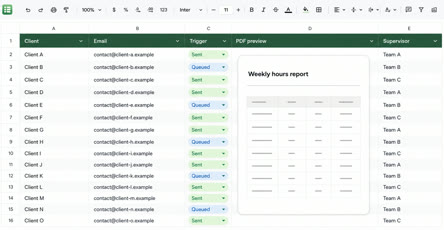
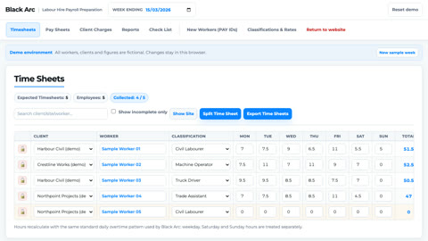
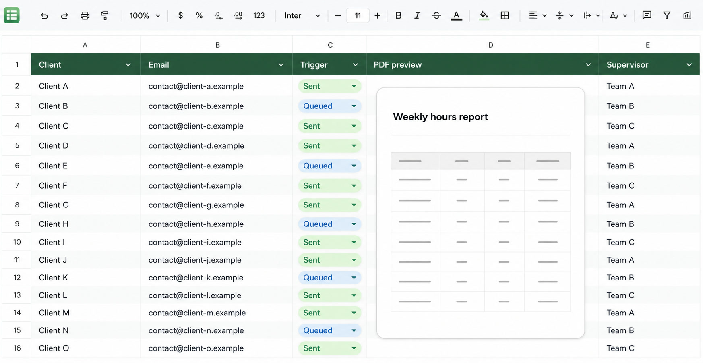
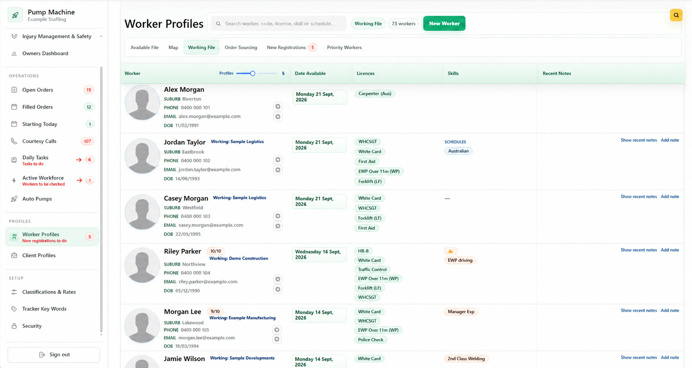

Project Examples
Blue Collar People
Labour Hire System
A workflow designed specifically for BCP that moves each timesheet from submission to approved payroll and sales data.
What the system handles
- Online timesheets
- PDF approvals
- Worker & client records
- Order forms
- Payroll preparation
Workers submit hours without paper or an app.
Workers use a native web link to submit their hours—no app or password required.

See code automated Google SheetEach client receives the right report to approve.
Submitted hours are reviewed, then the system creates a PDF report for each worker and sends it to the correct client for approval.
Approved timesheet data moves automatically.
Software tools speak to each other - data transfers simply.

Open demo of Black Arc PayrollThe Timesheet to Payroll & Sales Processing System prepares both business outputs.
The Timesheet to Payroll & Sales Processing System organises the approved timesheet data into a payroll file and sales data ready to generate invoices.
Example: one worker's weekIllustrative hourly rates — the Timesheet to Payroll & Sales Processing System applies the correct pay and charge rules automatically.
Mon
10hTue
8hWed
12hThu
8hFri
10hTotal
48h
10hTue
8hWed
12hThu
8hFri
10hTotal
48h
Per weekday: first 7.6h normal · next 2h time-and-a-half · then double time
48 hours = 38 normal + 6.8 time-and-a-half + 3.2 double time
Payroll file(38 × $35) + (6.8 × $52.50) + (3.2 × $70) = $1,911
Sales / invoice data(38 × $55) + (6.8 × $82.50) + (3.2 × $110) = $3,003
50% less time spent on admin
PDF Generator & Batch Emailer (Approval process)
×Code turns the review queue into sent PDF reports.

</>Automation codeGenerates PDFs and sends emails.One spreadsheet interface is backed by automation that creates client-specific PDF reports and sends each one to the correct recipient.
Workforce Management System
Affordable bespoke software
The Workforce Management System was built specifically for Blue Collar People’s requirements. It keeps worker and client profiles alongside order-form management in one relational system. As orders are filled, the relevant information is shared with relevant systems (the Timesheet to Payroll & Sales Processing System).
Filling and managing orders now takes 20% of the time it used to—giving the team more time to focus on better service for more clients.
You show me how your business is run, what you need and I build exactly what you need

New project
Your next project example
Add the next project details here when you are ready.